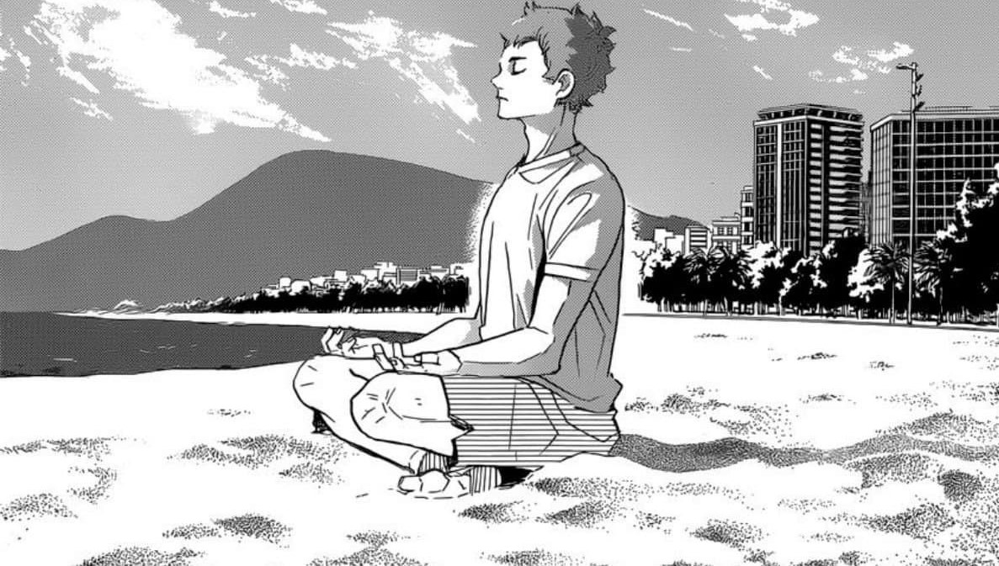
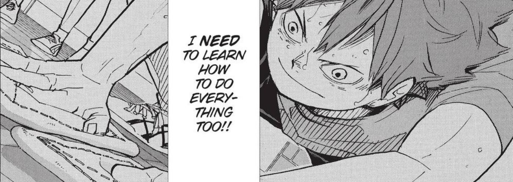

haikyuu!! is an anime and manga series by furudate haruichi about high school volleyball, and that’s pretty much it. the main character is hinata shoyo who is shorter than the average player, but has a huge love for the sport. it’s about his and other players' journeys in learning, playing, loving, and quitting volleyball. despite its simple concept, it’s actually a compelling allegory for disability and the disabled experience.
*:･ﾟ✧*:･ﾟ haikyuu was not written as a story about disability
ੈ✩‧₊˚ no one in the story is actually disabled
｡･:*:･ this site was heavily inspired by ludiscere or alastair’s video essay and experience as a disabled person
ﾟ☆: *.☽ .* this page will be summarizing part of his video and includes the discussion i had with him about quotes and parts of the series he did not mention in his video essay
## basically, we’re going to take volleyball as a framework analogous to general modern society. so the characters playing volleyball can be representative of real people participating in and contributing to society.
## there is no greater advantage in volleyball than being tall, and you have no control over your height.
## hinata wants to participate in this sport despite his short height and the structural issues that limit his efficacy and success. this is how it’s analogous to the disabled experience.
## ultimately, haikyuu shows how society is built unfairly and how passion and desire is good but can’t make up for lack of equity.
no access
hinata sucks at volleyball. he has never had a team or teammates in middle school, and was never given the proper resources to get any good at the sport. for more than half the series when he’s in high school, hinata does everything wrong and learns from his mistakes. he tries his hardest every time, but he can’t pass or receive the ball, can’t serve, can’t spike with his eyes open for a season and a half, and has an uncontrollable bowel before games. he’s a mess. he is failed by the system around him that refused him support, therefore is inexperienced, and therefore struggles at volleyball.
even when in high school he can’t play without the exceptional setter on his team and completely relies on someone else to do what he loves most.
being able
>> but hinata improves as he is finally provided the resources, and is never babied by anyone for his height because he’s much more than just a short player who can spike a ball.
>> later he learns how to properly receive, learns that volleyball isn’t about tall height or strong power, and finds his own way of playing that isn’t about his height or overcoming the lack of it.
not the best
hinata has also always wanted to become the ace of his team (the strongest player on the court), but later learns that he could never really become one, and that it’s okay. he completely lets go of that title in his last game of his first national tournament. in addition to this, he gets slammed by a fever, loses that last game, and goes on to never win a national tournament in his high school career.
not unstoppable
the fever is so important, and so uncomfortably relatable. alastair says it’s “the overwhelming slump after feeling alright for a while and then overdoing it because it isn’t often you feel alright.” hinata overdoes it because the success he’s wanted for so long was so close. he puts it in higher priority than his health. he tried his hardest, he wanted it enough, but it’s all out of his control and that’s okay.
| in fact, hinata never becomes “the best,” and his short height certainly never goes away. he’s very disadvantaged, he knows he’s not the best and never will be, and that’s okay. however, he does become really good and pursues volleyball professionally, having to be very skilled all around in order to have a place in the field at all. |  |
|  | alastair says haikyuu “shows how much disabled talent and ability and potential lies underneath the surface, and will never be discovered because of rampant inaccessibility” but it also shows how that can be changed. |
haikyuu has three other characters who represent disability in some way (hoshiumi, tenma, washijo) which this site will be under construction for - along with making this site more accessible.
this discussion would be much easier to understand if you read the manga, but feel free to read them anyway if you want!
p.s. manga is read from right to left!
"yeah exactly - that thing about accepting a lack of control is so pivotal, because both hinata and hoshiumi have a partner who supports them on that front, and shows them how sometimes things just aren't always going to go their way. like how kageyama says that it isn't for him decide how tanaka attacks when he sets for the line shot at the end of the inarizaki match, and hirugami constantly acts on korai's own advice, acting as living proof of how it'll still all go okay even if it doesn't go the way you hoped, both of them setting an example for hinata and hoshiumi respectively. i love that, because it's so hard to be disabled and alone, you need that unconditional support, but sometimes that support and example is best expressed through actions, not words. beautiful storytelling."
"haikyuu is probably the best example i've ever seen of making its content 'inspirational' without ever leaning too hard on trite cliches, and as such, i can't think of a single moment that would fit as an example. it's all done so tactfully. we see people be inspired by hinata all the time, he touches almost every character in the show in some sense - like how he helps hyakuzawa in the training camp arc, or how his appreciation for sets given with full effort gets to atsumu, or how tsukki repeatedly says that whenever he watches hinata 'buzz about' he feels like he has to get moving too - but he's never reduced to a caricature or one-dimensional figure whose only purpose is to benefit or motivate someone else. i think it's pretty much flawless on that front."
"i think the ultimate difference is that by the end of most underdog stories, they end up eschewing the very trait that made them an underdog in the first place. for most people trying to project themselves into these stories, that's really unrealistic - within the framework of disability, it's unlikely that you'll just get rid of it and live as if it never happened. that's why haikyuu stands out, it's a coming-of-age story where hinata's challenges remain in the forefront the whole time, even when he's at his most successful. he had no choice to become one of the best all-round players in japan, otherwise he'd have no chance of even getting to stand on the court, the thing he wants to do most. the bar is different for him. obviously not every story that's inspirational falls under the inspiration porn heading, but it usually depends on whether or not the authorial intent was to make a story that was above all else 'inspirational'. if so, they tend to lean on tropes and cliches more , but haikyuu isn't predominantly a parable on inspiration, it's more complex than that. furudate didn't write it for the shallow reason of inspiring."
"that tenma quote is one of the best - the accompanying image where you see korai next to fukuro and ushiwaka is just perfect, one of the best from that whole final arc. of course you're right, society and volleyball being comparable is the basis of the video, but that doesn't hold up under scrutiny from every angle, i only really focused on the disability one - this quote however is tricky, because
i think that the world, and disability by association, is predominantly unfair, and it's hard to think of anything fair about it, but i still think it lines up with the analogy.
obviously there's so much variation, some people have congenital disabilities, some develop with age, some are caused from physical or mental trauma, and none of those situations can ever really be considered fair - despite that though, the world is becoming more and more accessible and accommodating, and there's never been a better time to pursue your passions as a disabled person.
i look at it like this: i can't walk without assistance, but there are means put in place so that people like me can still have independence - for example, i use a walking stick, which means i can usually walk around and keep up with my friends, and this is an example of how the world can be fair and equitable; however, even though i have the means to walk around with my friends, it's never the exact same situation - it hurts me more than them, it tires me out more, i worry more about how i appear on account of using a walking aid, and if a situation occurred where we had to do something like run to catch a bus, i wouldn't be able to keep up, and in this way, the world is totally unfair. me and my friends can all walk now, but my experiences are totally separate to theirs, just by virtue of our lives being set on different paths. does that make sense?
that's how it is for hoshiumi and hinata too. remember when yachi and yamaguchi are talking about how good hinata is at everything at the msby v adlers match, and then tsukki says something like 'well yeah, he has to be, otherwise there'd be no reason to put him in over a 6'10" cannon like barnes'? - if we refer back to my walking idea from before, it's like this: barnes is a tall fit man with a long stride, and can walk from place to place without much effort or thought, but if hinata was going to keep up with his pace, think how many more steps he'd have to do, how much more effort he'd have to expend? this is how it's unfair. they can both walk, but over the same distance, hinata has had to do so much more to keep up, and that's bullshit. although, that's why haikyuu is so amazing - he does keep up, he acknowledges the lack of parity in the sport, and everyone acknowledges how amazing that feat is without ever condescending or pitying. i love it."
"i think it's a general statement on the human tendency to want what you can't have, especially when you're so close to it. there's no reason why a short player would love the sport any less than a tall player, but that doesn't necessarily equate to similar skill levels or chances of being picked. loving something so much, trying as hard as everyone else, and then not being permitted to play would very often light a fire in that person, because they have to try so much harder to be noticed.
that ends up working with the disability analogy in the context of the show too, the whole 'needing to try harder for the same result' thing. yeah i don't think it's a supercrip thing either, because (in the first half of the story in particular) hinata has some exceptional talents, but is woefully inadequate in most facets of the game, and is usually the least technically proficient player on the court. obviously that changes, and there are certain moments (like late in the kamomedai match) where he feels unstoppable, but we soon learn he isn't when the fever strikes. haikyuu always strikes a perfect balance between empowering its short characters and having their flaws or barriers be acknowledged too.
and yeah, it's a resources thing - korai went to a great school, had a professional level coach, good friends, and a very supportive family from a young age. hinata had less, but eventually found a team who supported him unconditionally, a lifelong contemporary in kageyama, takeda to help him mentally, ukai to help his physically, and then he's given the chance to live abroad for two years to hone his skills. so yeah, i just think washijo's comment here is a wider idea on human nature, which ends up being relevant to the disability allegory we're imposing onto the show."
"yeah, the takeda one is interesting. firstly, i think the fever is representative of the burnout you feel after overextension as a disabled person, and takeda's speech is basically telling hinata that he can't defeat his physical limitations just by willpower alone. he says to remember how this exact moment feels so it doesn't happen again - every disabled person who has experienced this slump knows that exact feeling, the frustration, the powerlessness. takeda is suggesting we use this as motivation to better understand our boundaries, and i think it goes well with something ukai says to hinata after the game - 'don't try to surpass your limits. work to push those limits higher'. and yes, i totally agree with your idea with volleyball and life being analogous. :)"
✧˖*°࿐ a huge thanks to alastair and his video. i hope you'd give haikyuu a watch/read! it's an amazing story with great characters and lessons.